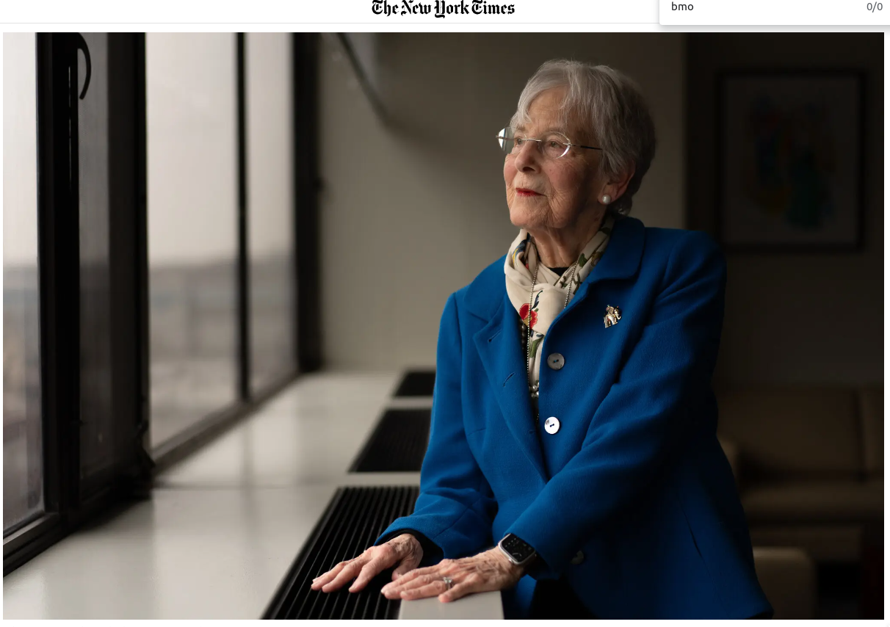

===================================================
item: reader comment on NYTimes article 20240227
paywall https://www.nytimes.com/2024/02/26/nyregion/albert-einstein-college-medicine-bronx-donation.html
$1 Billion Donation Will Provide Free Tuition at a Bronx Medical School
Ruth Gottesman, a longtime professor at the Albert Einstein College of Medicine, is making free tuition available to all students going forward.
Jennifer
Los Angeles
Feb. 26
Times Pick
This is truly the most life-changing news I woke up to..my daughter is going to medical school next year, and Albert Einstein is one place she was accepted. However, the looming debt has been very heavy on my heart - I'm a single mom and put her through undergrad at Boston University, but I can't afford to help her with all of medical school. I know the burden student loans can take on someone - I'm 59 and have my doctorate in clinical psychology -it took me years to pay off my $250,000 debt - and that was in 1993 dollars. My prayers have been answered by a beautiful, humble, thoughtful, and giving mouse....I wish I could thank Dr. Gottesman personally - please pass on my deepest gratitude!!!!! Jennifer, Psy.D.
----Excerpt:
The fortune came from her late husband, David Gottesman, known as Sandy, who was a protégé of Warren Buffett and had made an early investment in Berkshire Hathaway, the conglomerate Mr. Buffett built.
The Name
Dr. Gottesman was reluctant to attach her name to her donation. “Nobody needs to know,” Dr. Ozuah recalled her saying at first. But Dr. Ozuah insisted that others might find her life inspiring. “Here’s somebody who is totally dedicated to the welfare of others and wants no accolades, no recognition,” Dr. Ozuah said.
Dr. Ozuah noted that the going price for getting your name on a medical school or hospital was perhaps a fifth of Dr. Gottesman’s donation. Cornell Medical College and New York Hospital now include the surname of Sanford Weill, the former head of Citigroup. New York University’s medical center was renamed for Ken Langone, a co-founder of Home Depot. Both men donated hundreds of millions of dollars.
But it is a condition of Dr. Gottesman’s gift that the Einstein College of Medicine not change its name. Albert Einstein, the physicist who developed the theory of relativity, agreed to confer his name on the medical school, which opened in 1955.
The name, she noted, could not be beat. “We’ve got the gosh darn name — we’ve got Albert Einstein.”
-----
